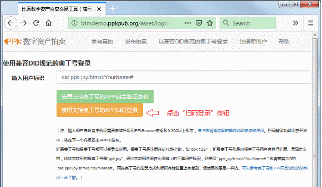
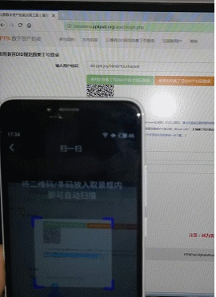
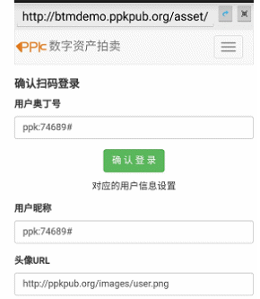
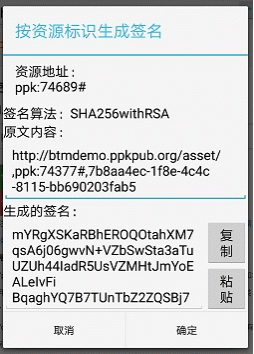
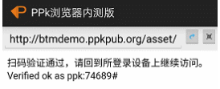

PPk技术社区所定义的奥丁号（ODIN）是Open Data Index Name（开放数据索引命名）的缩写，以比特币链为核心+可多级扩展+支持灵活映射其它链和传统技术平台+非传统抢注模式的命名机制，很好地兼顾了安全、分散、易记忆这三点，可以在兼容W3C的DID（去中心化标识）标准协议框架下，提供自主、可信的身份标识应用服务；还能进一步灵活扩展适应更广泛的应用需求，比如自主可信区块链域名。关于奥丁号（ODIN）的详细定义请访问 http://ppkpub.org 获取。
在PPk浏览器安卓APP最新版本里，已支持将奥丁号作为自主身份，并扫码登录应用服务。这里以PPk-JoyAsset数字资产自主拍卖交易工具原型为例，来说明具体操作方法。
首先请确认已安装好PPk浏览器安卓版最新版的应用（0.3.3版以上），并设定了一个根奥丁号或扩展奥丁号作为自主身份标识，相关说明可以参考这里。
在电脑浏览器里打开支持扫码登录的应用服务，比如 PPk-JoyAsset数字资产自主拍卖交易工具示例（http://btmdemo.ppkpub.org/asset/login.php），显示如下图所示：

点击“扫码登录”按钮 ，就会出现相应的二维码，然后在安卓手机上打开PPk浏览器应用，并点击右上角的扫码图标
，就会出现相应的“扫一扫”操作界面，如下图所示：
，就会出现相应的二维码，然后在安卓手机上打开PPk浏览器应用，并点击右上角的扫码图标
，就会出现相应的“扫一扫”操作界面，如下图所示：

将手机的摄像头对准电脑浏览器上显示的登录二维码，清晰扫码并识别成功后，手机上将显示对应的登录确认界面，如下图所示：

确认要登录使用的奥丁号显示无误后，点击“确认登录”按钮，将弹出签名验证对话框，如下图所示：

点击“确定”按钮提交签名，通过验证后看到如下图的提示，就说明指定奥丁号的扫码验证已经通过了。

然后回到电脑浏览器上，应用服务网页会自动切换到登录成功后的页面，就可以正常操作了。
详细了解PPk浏览器的更多功能特性请下载下述资料：
https://ppkpub.github.io/docs/DOC_PPk_Browser_Tutorial.pdf